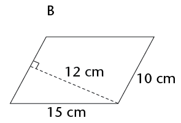
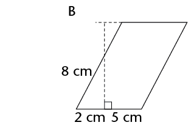

Area and perimeter of shapes
In this chapter, you will revise how to calculate the perimeter and area of squares, rectangles, triangles and circles. The perimeter of a shape is the distance all the way around the sides of the shape. The area of a shape is the flat space inside the shape. You will also learn how to calculate the areas of parallelograms, rhombi, kites and trapeziums, as well as investigate the effect on the perimeter and area of a shape when its dimensions are doubled.
The perimeter (P) of a shape is the distance along the sides of the shape. The area (A) of a figure is the size of the flat surface enclosed by the figure.

|
Figure |
Perimeter |
Area |
Number of 1 cm \(\times\) 1 cm squares |
|
A |
|
||
|
B |
|
||
|
C |
|
||
|
D |
|
||
|
E |
|
||
|
F |
|
||
|
G |
|
||
|
H |
|
To tessellate means to cover a surface with identical shapes in such a way that there are no gaps or overlaps. Another word for tessellating is tiling.
- Write down, without counting, the total
number of squares that form this rectangle, including those
that are hidden.
Explain your reasoning.

- What is the area of the rectangle,
including the white part?
Area of a rectangle = length \(\times\) breadth = \(l \times b \)
Area of a square = \(l \times l = l^{2}\)
Both length (l) and breadth (b) are expressed in the same unit.
- We can calculate the area of the room by
dividing the floor into two rectangles, as shown in the diagram
on the right below.

Area of the room = Area of yellow rectangle + Area of red rectangle
\(= (l \times b) + (l \times b)\\ = (14 \times 9) + (15 \times 8)\\ = 126 + 120\\ = 246 \text{ m}^{2}\)
- The yellow part of the room has a wooden
floor and the red part is carpeted. What is the area of the
wooden floor? What is the area of the carpet?
- Calculate the area of the room using two
different shapes. Draw a sketch.


- Perimeter \(= 2 \times (l + b) \)
- Perimeter \( = l + b + l + b \)
- Perimeter \( = 2l + 2b \)
-
Perimeter \( = l + b \)
l and b refer to the length and the breadth of a rectangle.
The following are equivalent expressions for perimeter:
\(P = 2l + 2b \) and \(P-2(l + b)\) and \(P = l + b +l+b\)

The following are important formulae to remember:
- \(d = 2 \pi r\) and \(r= \frac{1}{2}d\)
- Circumference of a circle \((c) = 2 \pi r \)
- Area of a circle \( (A) = \pi r^{2}\)
- A circle with a radius of 5 m
- A circle with a diameter of 18 mm
- a circumference of 53 cm
- a circumference of 206 mm


- an area of 200 m2
- an area of 1 000 m2
Remember:
1 cm = 10 mm 1 mm = 0,1 cm
1 m = 100 cm 1 cm = 0,01 m
1 km = 1 000 m 1 m = 0,001 km
- 34 cm = .......... mm
- 501 m = .......... km
- 226 m = .......... cm
- 0,58 km = .......... m
- 1,9 cm = .......... mm
- 73 mm = .......... cm
- 924 mm = .......... m
- 32,23 km = .......... m
1 cm \(\times\) 1 cm
=0.01 m \(\times\) 0.01 m
=0.0001 m2 Example:
Convert 50 cm2to m2
1 cm2 = 0,0001 m2
50 cm2 = 50 \(\times\) 0,0001 m2
= 0,005 m2
- 650 mm2
- 1 200 mm2
- 18 m2
- 0,045 m2
- 93 mm2
- 177 m2
- Convert 93 mm2 to m2
- Convert 0,017 km2 to m2

\(\therefore\) Area of parallelogram = base \(\times\) perp. height
We can use any side of the parallelogram as the base, but we must use the perpendicular height on the side we have chosen.
- Copy the parallelogram above into your exercise book.
- Using the shorter side as the base of the parallelogram, follow the steps above to derive the formula for the area of a parallelogram.
Work out the area of the following parallelograms using the formula.





Area of a rhombus = length \(\times\) perp. height


\(\therefore\) Area of a kite = \(\frac{1}{2}\) (diagonal 1 \(\times\) diagonal 2)
- 150 mm and 200 mm
- 25 cm and 40 cm

\(\therefore\) Area of a trapezium = \(\frac{1}{2}\) (sum of parallel sides) \(\times\) perp. height


Doubling means to multiply by 2.
|
Figure |
Original figure |
Figure with both dimensions doubled |
|
A |
P = A = |
P = A = |
|
B |
P = A = |
P = A = |
|
C |
P = A = |
P = A = |
|
D |
P = A = |
P = A = |
- Write down
the formulae for the following:
Perimeter of a square
Perimeter of a rectangle
Area of a square
Area of a rectangle
Area of a triangle
Area of a rhombus
Area of a kite
Area of a parallelogram
Area of a trapezium
Diameter of a circle
Circumference of a circle
Area of a circle
-
Calculate the perimeter of the square and the area of the shaded parts of the square.

Calculate the area of the kite.